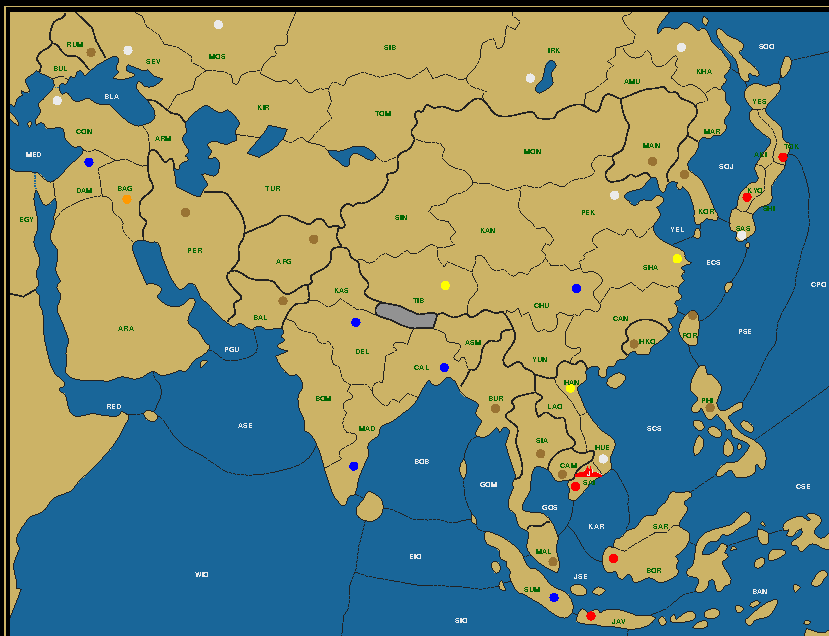

Last Man Standing is a puzzle on the Diplomacy board, whereby the whole board gets reduced to a single unit. This unit must reach its final destination in a mere four game years, without any power capturing any neutral centers and with all powers still possessing at least one unit at the end of the second year. Your goal is to reconstruct the complete game history from the map given. For more details, read the LMS Roll Call. Theater: AsiaWe introduced the Canton map in the last issue. But to save you the trouble of looking back, let's repeat the main points here. Canton is composed of a host of imperial and colonial powers at the start of the 20th century. Clockwise from the top there is Russia, Japan, Holland (in Indonesia), Turkey and in the center are China, France (in Indochina) and Britain (in India). China and Russia both start with 4 units and there are 36 centers in total, but for the purpose of a no-neutral LMS puzzle, only the first fact matters. Interestingly there are two island powers, Japan and Holland, with the Dutch military completely composed of fleets. Mission: The Fall of SaigonWhen France started to colonize Indochina, they first established themselves in South-Vietnam, making Saigon the capital of the region they called Cochinchina. But things never went easy. From the Siege of Saigon in 1860-1861 by the Vietnamese after the capture of the city by France only a year earlier, to the Fall of Saigon in 1975 at the hands of the North-Vietnamese Viet Cong, little over a century had passed of great suffering and greater humiliation. You have a mere four years to repeat the communists' greatest victory of the Cold War.

Japanese Fleet to Saigon, After Winter 1904 Britain (0/6) Cal Chu Dam Del Mad Sum China (0/3) Han Sha Tib Japan (1/5) Bor Jav Kyo Sai Tok Russia (0/8) Con Hue Irk Kha Mos Pek Sas Sev Turkey (0/1) Bag Even though the fleet is red, it's not really coming from a communist country. Nevertheless communists play a major role in this scenario, right until the end. In a break with the past the first puzzle no longer shows the After Winter 1903 map, nor does it say where the unit started. That shouldn't be much of an obstacle. Besides, Saigon is much more sexy than the little known destination of the second puzzle, wouldn't you agree? If it would have been Vladivostok… Well, even then! Mission: The Beringian Standstill11,000 years ago, during the last ice age, humans crossed over to America from Asia using the land bridge that existed across the Bering Strait. But it's not like the people in China and Siberia just packed their bags one day and the next day walked across a bridge of sorts to discover a new continent waiting to be populated. Current research indicates that a number of tribes lived on the "bridge", in reality a stretch of steppe land as wide as Alaska, for thousands of years, blocked by a large ice shelf that stretched all the way down to Wisconsin. It's only when that ice shelf started to melt and inundate their land that they were able (or forced) to move on and spread throughout the American continent. Fleet Madras to Khabarovsk, After Winter 1904 Britain (1/5) Cal Del Kha Mad Tib China (0/1) Pek France (0/6) Bor Chu Han Hue Sai Sha Holland (0/2) Jav Sum Japan (0/3) Kyo Sas Tok Turkey (0/6) Bag Con Dam Irk Mos Sev Your task is to lead a single tribe, the survivors of a nuclear apocalypse that threw civilization back to the Stone Age, to Russia's Pacific Coast, where they can wait for the next ice age to end in order to cross over. With water levels retreating due to the ice buildup they might even discover a lost continent. Who knows? Report: The Silk Road — Army Damascus to Peking
Army Damascus to Peking, After Winter 1903 When confronted with a new map for the first time, the first task is to familiarize yourself with the layout, the lay of the land so to say. Or more to the point, the lay of the land and sea. On the surface the Canton map mirrors the Standard map along a vertical axis. Left becomes right, right becomes left. Britain becomes Japan, the Mediterranean becomes the Indian Ocean and the Black Sea just stays the same. There's even an impassable Himalaya region in the center to mimic Switzerland and a supply center province for Hong Kong with just two neighbors just like Portugal. The eponymous province of Canton plays the role of Spain for the latter. But there are significant differences as well, most notably Holland, a multi-island nation centered on Indonesia that guards the passage between the Pacific and the Indian Ocean. As if to compensate for this increase in water provinces there's no equivalent for the Baltic Sea up North. This means that armies and fleets have more freedom to move in their own theaters, but less places to meet and interact with each other. There are also now two powers with four home centers, Russia and China, and one extra neutral center. The extra Chinese home center in particular is relevant to this puzzle, especially since these four Chinese home centers are connected. Indeed on the problem map the three surviving raiders are each on a home center, with the Chinese sniper able to support the Turkish army first to Chunking and then to Peking. Three home centers captured means there can be four snipers in 1903 and thus plenty of opportunity to dislodge units late in the game. China proves itself worth of its Middle Kingdom label, as it's pretty central. But its coastline is exclusively eastward looking, so fleets from the western theater will have difficulty reaching it. This is particularly true for the Turkish and Russian fleets staring each other down across the Black Sea. An early removal is preferable. Either one can move to Armenia and get dislodged there in Fall 01. But only Russia is in a position to lose enough home centres to allow disbanding its Black Sea fleet. Both Khabarovsk and Irkutsk, its centers in the east, are vulnerable. Of these Khabarovsk is colored red (Japanese) on the problem map and in reach of Japanese troops (either by fleet or convoyed army), so as long as no Russian unit captures a center in the first year, this should be sufficient. Of note in the Turkish corner is that, with Armenia blocked and Persia a supply center, army Dam (Damascus) can only move once in the first year and needs to hold in Fall either in Constantinople or Baghdad. Which one is irrelevant, as we'll be moving through Persia the next Spring to reach the supply center free Turkmenistan on our way to Tibet. The next fleet to consider is the British fleet in Madras on the Indian subcontinent. The distance to Peking is exactly 8, so in theory it could attempt to undertake that trip, if not for the fact that it would still be 2 provinces away from Peking at the start of 1904. Only one unit is allowed to be that far out, which we know to be the army in Tibet, not some fleet bordering on Shanghai. It's quite easy though to force an early disband by taking a center with a Chinese army. Just be careful to retake that center the next year and make it British again. Calcutta is ideal for the purpose, as the British army can move on to the Chinese home center of Chunking in the third year, which is where we find it on the problem map. We see further that France is taking the Dutch center of Borneo to get rid of one Dutch fleet. That still leaves two Dutch, two Japanese and one Russian fleet on the board in addition to the French fleet that ends up in Shanghai and the Chinese Peking fleet. With the British center gained in the first year it would be wise to build a second Chinese fleet to help in cleaning up the seas. The remaining Chinese armies can be employed to attack all the French, Russian and other armies coming their way. With some clever positioning, three prove to be sufficient. Let's see how this works. Army Damascus to Peking, After Winter 1901 Click to view the complete history in a separate window Season: 1901. Marco Polo and his father and uncle set off from Damascus to reach Baghdad. They intend to travel further by ship, but seeing the deplorable state of the available vessels, they decide to go by land instead. The Indian Ocean is indeed a quiet place compared to the Pacific. 1902. After traveling through Persia, the Silk Road should take them through Turkmenistan and Uzbekistan, through legendary cities such as Bokhara and Samarkand. Warfare however makes this a dangerous trip and they take a more southerly course, linking up with the Silk Road close to the Chinese border. Elsewhere battles rage throughout the continent. Army Damascus to Peking, After Winter 1903 Click to view the complete history in a separate window Season: 1903. After recovering from an illness Marco Polo continues his journey with his guardians. They skirt the Gobi desert and the Tibetan plateau. Life is harsh here. Population declines.  Army Damascus to Peking, After Winter 1904 Click to view the complete history in a separate window Season: 1904. Kublai Khan welcomes the European merchants in his summer palace in Xanadu. The long trip is over. Peace seems to have settled over the region, but that is very relative in the vast Chinese Mongolian Empire, where dynastic struggles, uprisings and external threats are a fact of life. But for the Polo's it's a time of trading and diplomatic missions in the service of the Emperor. Returning home is another matter altogether. The emperor is fond of young Marco, and only lets them go 17 years later, to accompany a princess bride to her wedding to a powerful Khan. For the return trip they take a ship for a true tour of Asia. Report: The Bengal Tiger — French Army to CalcuttaFrench Army to Calcutta, After Winter 1904 Our second puzzle centers on the colonial powers Britain and France. The French army leaves Indochina and seemingly singlehandedly conquers the whole Indian subcontinent, completely wiping the British competitor from the area. Meanwhile it loses most of its home centers to that other colonial super power, Holland. Alternate history, or what? This game is going to play out mostly on the wings. Although India is located pretty central in the Indian Ocean, very few fleets will visit its shores. The most prominent clues for this phenomenon are the captures of Baghdad and Hanoi, respectively by China and Holland, as can be attested on the final map. Neither center is within close reach of those powers. It takes three seasons for the Dutch fleet Borneo to reach Hanoi (four if it stops in Saigon on the way up) and four seasons for Chinese army Tibet to get to Baghdad. For what purpose? The answer is bound to the faith of the Russian fleets. As in the first puzzle you would expect Russia to lose a few centers in the first year to allow disbanding its faraway fleets. But instead Russia is clearly expanding, as Sasebo in Japan, Constantinople and even Peking, which it can capture with army Irkutsk, are all Russian. As with the British fleet in the first puzzle it's not possible to sail from Khabarovsk on Russia's Pacific coast (no, not Vladivostok, quite original, not?) to Calcutta in the give time span. And if it survives 1901, we need to eliminate it, the two Japanese fleets and the Dutch fleet with whatever is available. Which means China must become a second sniper country, at least until the second or third year (since it keeps Baghdad until the end). Two Chinese fleets would be best, but we'll make do with one and the proximity of the Chinese coast, allowing for the second sweeper to be an army. Meanwhile Fleet Sevastopol is in similar straits. Traveling through both the Bosporus and the Suez Canal it would take 8 turns to get to Calcutta, which means it would be out in the open ocean the year before, instead of on a supply center. That might still work out, but the Chinese capture of Baghdad gives us a better option. We can employ Turkey as a third sniper country, disbanding a sniper unit when Baghdad gets taken. Yes, it gets a little crazy when sniper countries attack each other, but the main concern is that each of them loses centers gradually, not that they lose all their centers. In fact Turkey will retain Damascus and just like China be spared from complete elimination. There's an advantage in having centers captured in the second year. A sniper country could borrow it in the first year to keep more units in play or even build new ones. That's why we'll send a Chinese army to Hanoi. It would be a mistake though to depend too much on the Chinese. There are still two other Dutch fleets to deal with in the Indian Ocean, as well as one remaining Turkish unit. It turns out we need the British to build another fleet, not the Chinese, which is why we let Britain capture Chunking. It's a pretty complicated dance, but if you pay close attention, it will all start to make sense. Let's check the solution. 1901. Riding her tiger Durga, the Hindu goddess of war, spreads her eight arms in all directions with the aim of achieving peace through war (imperialists love it when it's heavenly sanctioned). China and Britain do their little center dance. Meanwhile fleet Madras sails towards Egypt, followed by the Dutch. Setting up a convoy, perhaps? 1902. Ganesha, the elephant god, dances on the board, while shaking his big belly. Army Baghdad gets a convoy, but not to a center. His hometown is captured by the Chinese who vanish so quickly that it makes your head spin. Army Hanoi to Calcutta, After Winter 1903 Click to view the complete history in a separate window Season: 1903. Hanuman, the Monkey God, displays his excellent mastery of the martial arts to reduce the battlefield to a handful of heroes that will decide the final battle. Notice that the remaining blue army is now in Canton, three moves away from Calcutta, the end destination. Army Hanoi to Calcutta, After Winter 1904 Click to view the complete history in a separate window Season: 1904. With studied calmness Kali, the black goddess of time and death and protector of Calcutta ("field of Kali"), lures her prey into her trap, then steps on it. Lord Shivu lies calm and prostrate beneath her, as only gods who have reached the ultimate dharma can.
|